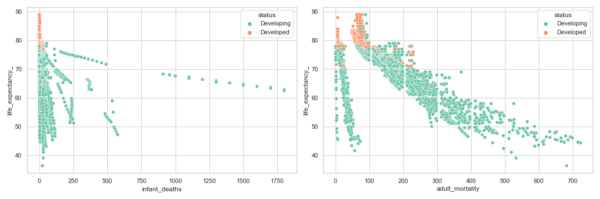

1. EDA
apakah Infant Death dan Adult Mortality Rates mempengaruhi Life Expectancy ?
Penjelasan Feature yang digunakan :
- Adult Mortality Rates : kemungkinan kematian antara 15 - 60 tahun per 1000 populasi
- Infant Deaths : jumlah kematian bayi per 1000 populasi
dilihat dari plot dibawah, maka dapat disimpulkan bahwa negara berkembang memiliki tingkat adult_mortality yang jauh lebih tinggi
daripada negara maju. Namun, tidak terlihat adanya tren yang begitu mencolok antara tahun dan adult mortality.
pada negara berkembang, angka kematian bayi dari tahun ke tahun mengalami penurunan, mungkin disebabkan karena kemajuan di bidang
medis. pada negara maju, mengingat negara maju kemungkinan memiliki teknologi yang lebih maju juga daripada negara berkembang,
maka sangat sedikit atau hampir tidak ada angka kematian bayi di negara negara yang masuk dalam kategori maju.
infant_deaths dan adult_mortality sama sama memiliki korelasi negatif terhadap life_expectancy_,
namun bila dilihat baik dari score maupun plot nya, adult mortality memiliki korelasi yang lebih kuat daripada infant_deaths.
jika suatu negara ingin meningkatkan life_expectancy_ maka mengurangi adult_mortality mungkin menjadi langkah awal yang bagus.

Apakah Schooling mempengaruhi masa hidup ?
Penjelasan Feature yang digunakan :
- Schooling : Lama tahun Pendidikan
seiring berjalannya waktu, dunia pendidikan terus meningkat, baik di negara maju maupun negata berkembang.
namun terlihat jelas bahwa negara berkembang masih ketinggalan jauh meskipun peningkatannya pun sedikit lebih pesat di
negara berkembang daripada negara maju walaupun tidak terlihat jelas.
schooling tidak hanya mempengaruhi life_expectancy saja, namun schooling memiliki korelasi dengan beberapa feature lain,
bahkan beberapa feature tersebut juga memiliki korelasi dengan life_expectancy. namun fitur schooling merupakan salah
satu fitur yang kuat korelasinya dengan life_expectancy.
Apakah konsumsi Alkohol mempengaruhi Life Expectancy ?
Penjelasan Feature yang digunakan :
- Alcohol : konsumsi per kapita (15+) (dalam liter alkohol murni)
Pada plot dibawah terlihat bahwa negara maju mengkonsumsi lebih banyak alcohol ketimbang negara berkembang,
namun hal yang menarik terjadi di negara maju mulai dari tahun 2013 dan negara berkembang mulai dari tahun 2011 dimana
konsumsi alcohol menurun drastis. Hal ini mungkin bisa terjadi karena diberlakukannya aturan aturan baru tentang
pembatasan konsumsi alkohol

Score korelasi antara life_expectancy dan alcohol termasuk lumayan yaitu 0.4 yang berarti adanya korelasi positif,
ini mungkin dipengaruhi karena mayoritas negara negara yang memiliki life expectancy tinggi ( baik negara maju maupun
berkembang ) gemar mengkonsumsi alkohol
Apakah negara dengan populasi padat cenderung memiliki Life Expectancy rendah ?
Penjelasan Feature yang digunakan :
- population : Populasi suatu negara
Plot dibawah dibuat menggunakan data gabungan 10 negara dengan penduduk padat dan tidak padat.
Terlihat hampir tidak ada perbedaan pada rata-rata life expectancy pada negara penduduk padat maupun yang tidak,
meskipun terlihat bahwa negara penduduk yang padat tampaknya memiliki rata rata life expectancy lebih rendah.
2. Model Regresi ( Linear Regression )
Dibawah ini adalah plot Magnitude ( coefficient ) semua fitur pada dataset terhadap life Expectancy.
Terlihat bahwa schooling dan income composition of resources memiliki pengaruh positif cukup besar terhadap life expectancy.
Sebaliknya, adult mortality dan hiv/aids memiliki pengaruh negative terhadap life expectancy
Berikut adalah coefficient masing masing fitur yang sudah diseleksi dan digunakan untuk pembuatan model prediksi
( Linear Regression ), terlihat bahwa income_composition_of_resources adalah fitur paling penting untuk meningkatkan
rata rata masa hidup suatu negara
3. Model Klasifikasi ( Logistic Regression )
Dibawah ini adalah plot Magnitude ( coefficient ) semua fitur pada dataset terhadap Country Status.
Seperti yang sudah dianalisa sebelumnya, konsumsi alcohol negara negara maju sangat mempengaruhi mesin prediksi kita.
Fitur selanjutnya yang tidak kalah penting adalah fitur life_expectancy, percentage_expenditure dan schooling.
Terlihat juga bahwa semua fitur yang mempengaruhi country status ini memiliki pengaruh yang positif.
Berbeda pada saat feature selection, Ketika dilakukan pembuatan model dengan Logistic Regression,
terlihat bahwa schooling memiliki pengaruh positif lebih besar terhadap kemajuan suatu negara,
baru disusul oleh alcohol dan life_expectancy. Terlihat juga bahwa tahun demi tahun, banyak negara yang sebelumnya maju,
menjadi negara berkembang.
Kesimpulan
-
infant_deaths dan adult_mortality sama sama memiliki korelasi negatif terhadap life_expectancy
-
adult mortality memiliki korelasi yang lebih kuat daripada infant_deaths.
-
negara berkembang masih ketinggalan jauh meskipun peningkatannya pun sedikit lebih pesat di negara berkembang
daripada negara maju walaupun tidak terlihat jelas.
-
negara maju mengkonsumsi lebih banyak alcohol ketimbang negara berkembang
-
hampir tidak ada perbedaan pada rata-rata life expectancy pada negara penduduk padat maupun yang tidak,
meskipun terlihat bahwa negara penduduk yang padat tampaknya memiliki rata rata life expectancy lebih rendah.
-
schooling dan income composition of resources memiliki pengaruh positif cukup besar terhadap life expectancy
-
adult mortality dan hiv/aids memiliki pengaruh negative terhadap life expectancy
-
income_composition_of_resources adalah fitur paling penting untuk meningkatkan rata rata masa hidup suatu negara
-
schooling memiliki pengaruh positif lebih besar terhadap kemajuan suatu negara, baru disusul oleh alcohol dan life_expectancy.